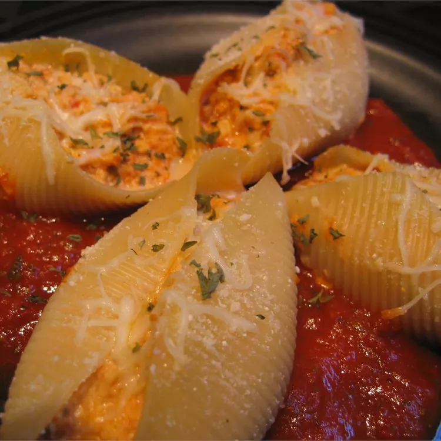

Tofu and Cheese Stuffed Shells Recipe

Protein Shells
No one will ever know that these giant pasta shells contain tofu...unless you tell!
Ingredients
- 1 (16 ounce) package jumbo pasta shells
- One third cup grated carrot
- One fourth cup shredded zucchini
- 3 tablespoons chopped onion
- 1 (8 ounce) container tofu
- 1 red bell pepper, chopped
- half cup shredded Monterey Jack cheese
- 1 cup shredded mozzarella cheese, divided
- Half cup ricotta cheese
- One and a half cups broccoli florets, lightly steamed or blanched
- 1 egg white
- half teaspoon salt
- half teaspoon pepper
- 2 (8 ounce) cans diced tomatoes
- one third cup tomato paste
- 1 teaspoon dried basil
- 1 teaspoon dried oregano
- one fourth teaspoon garlic powder
- 1 teaspoon minced garlic
Steps
- Preheat oven to 350 degrees F (175 degrees C).
- Bring a large pot of lightly salted water to a boil. Add pasta and cook for 8 to 10 minutes or
until al dente; drain.
- Meanwhile, in a small saucepan over medium heat combine carrot, zucchini and onion. Pour in
just enough water to cover; cook until tender and drain.
- In a large bowl, mash the tofu with a fork. Stir in carrot mixture, Monterey Jack cheese, 1/2
cup mozzarella cheese, ricotta cheese, egg while, salt and pepper. Mix well and set aside.
- In a medium saucepan over medium-high heat, combine tomatoes, tomato paste, basil, oregano,
garlic powder and garlic. Bring to a boil; reduce heat to low and simmer for 10 minutes.
- Stuff each cooked pasta shell with about 1 rounded tablespoon of the filling. Place shells in
an un greased 2-quart baking dish. Pour sauce over shells.
- Cover and bake in preheated oven for 25 minutes, or until heated through. Sprinkle with
remaining 1/2 cup mozzarella cheese.